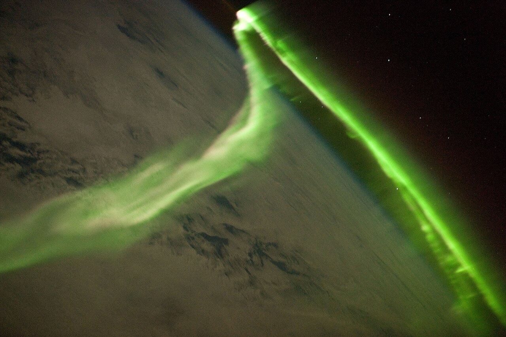
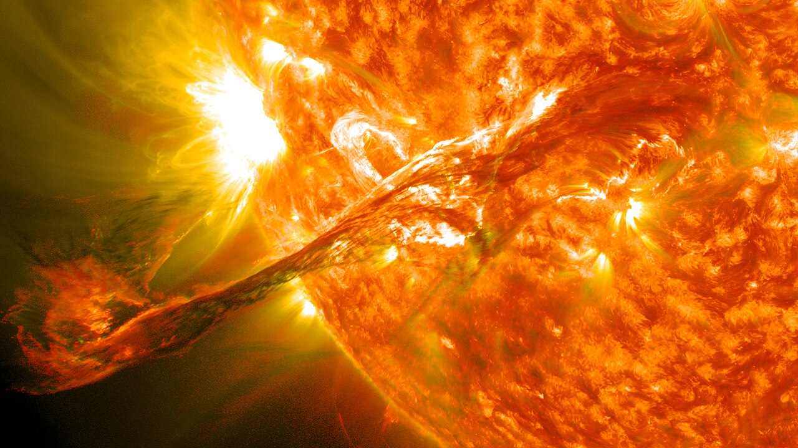
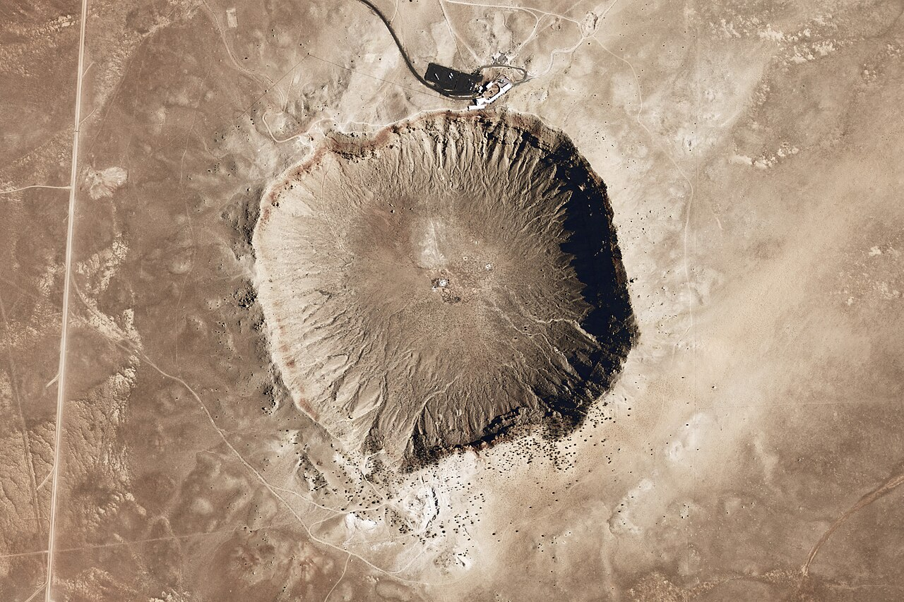
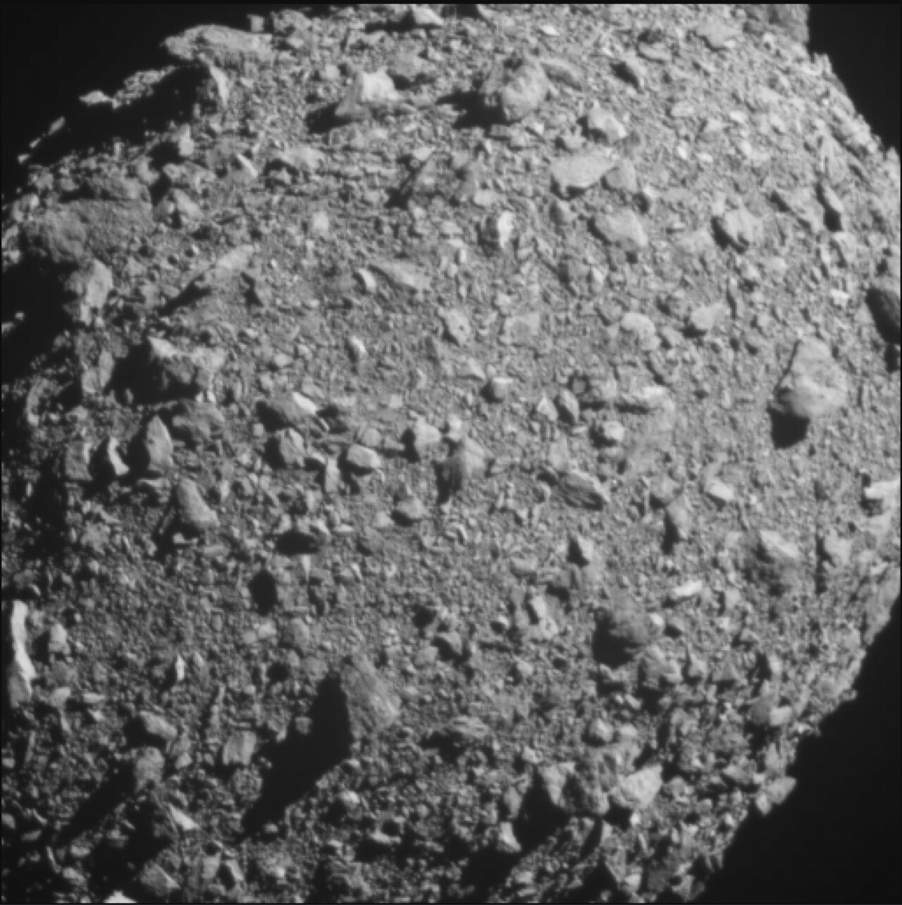
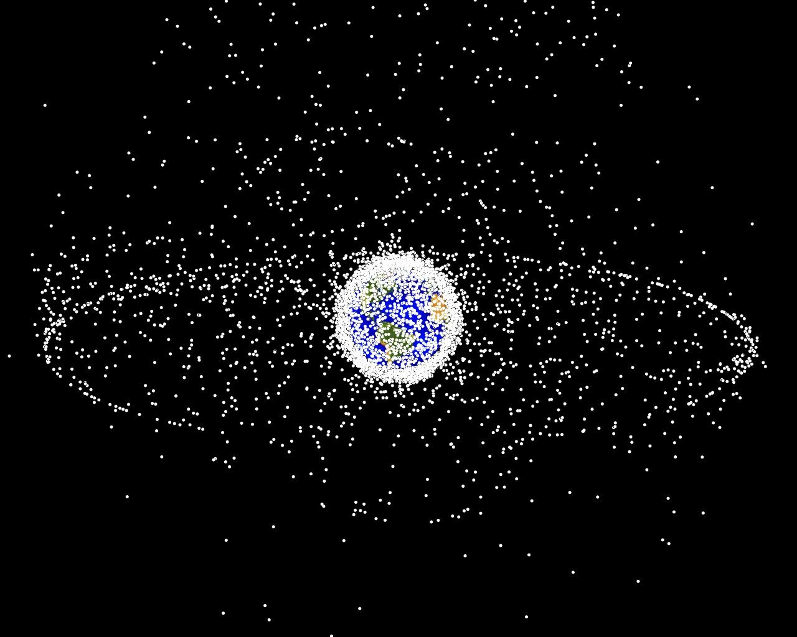
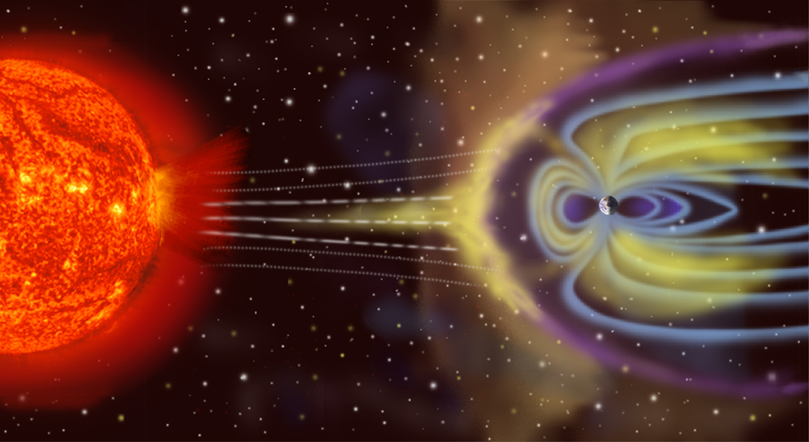

동기 유발
하룻밤 사이 사라진 인공위성 38기
교과서 p. 16학습 목표
- 태양 활동 감시 시스템과 지구 접근 천체 등 우주 위험 감시 기술을 설명할 수 있다.
- 우주 위험 감시의 중요성을 우주 재난 측면에서 인식할 수 있다.

NASA, 퍼블릭 도메인

NASA Goddard (SDO), CC BY 2.0
2022년 2월, 막 발사된 통신 위성 49기 중 38기가 며칠 만에 대기로 떨어져 불탔다.
로켓도 위성도 멀쩡했는데, 범인은 1억 5천만 km 떨어진 태양이었다. 어떻게 된 일일까?
로켓도 위성도 멀쩡했는데, 범인은 1억 5천만 km 떨어진 태양이었다. 어떻게 된 일일까?
정답은 지자기 폭풍 → 상층 대기 가열·팽창 → 저궤도(약 210 km) 위성의 공기 저항 급증입니다. 학생들의 추측을 몇 개 받아 두고, 개념 1을 배운 뒤 다시 설명하게 하면 좋습니다. 운영안 4차시(우주 기상 2 / 지구 접근 천체·우주 쓰레기 2).
핵심 개념 1
태양 활동과 우주 기상
교과서 p. 16 ~ 17(1) 태양에서 오는 위험
- 우주 기상: 태양 활동으로 지구 주변 우주 환경이 시시각각 변하는 현상
- 플레어(흑점 폭발): 흑점 부근에서 막대한 에너지가 순식간에 방출되며 X선·자외선이 강해진다. 빛의 속도로 약 8분 20초 만에 도착한다.
- 태양 고에너지 입자: 양성자 등이 빠르게 가속되어 수십 분 ~ 수 시간 만에 도착한다.
- 코로나 물질 방출(CME): 자기장을 품은 거대한 플라스마 덩어리. 보통 1 ~ 3일 뒤 지구에 도착해 지자기 폭풍을 일으킨다.
| 현상 | 도착 시간 | 주요 피해 |
|---|---|---|
| X선·자외선 (플레어) | 약 8분 | 전리층 교란 → 단파 통신 두절, GPS 오차 |
| 고에너지 입자 | 수십 분 ~ 수 시간 | 위성 전자 장비 고장, 우주인·극항로 승무원 방사선 피폭 |
| CME → 지자기 폭풍 | 1 ~ 3일 | 송전망 과전류·대정전, 위성 궤도 저하, 오로라 |
(2) 지구를 지키는 방패: 자기권과 전리층
- 지구 자기권: 지구 자기장이 미치는 영역. 태양풍의 대전 입자 대부분을 막아 낸다. 태양 쪽은 눌리고(약 10 R⊕), 반대쪽은 길게 늘어난 꼬리 모양이다.
- 태양풍이 세지거나, 태양풍 속 자기장이 남쪽(지구 자기장과 반대 방향)을 향하면 에너지가 자기권 안으로 잘 들어와 지자기 폭풍이 강해진다.
- 전리층: 열권(약 60 ~ 1000 km)에서 태양 복사로 기체가 이온화된 층. 전파를 반사해 원거리 통신에 이용되지만, 태양 활동이 강하면 교란된다.
- 오로라: 자기권에 들어온 대전 입자가 자기력선을 따라 극지방 상층 대기로 쏟아져 원자·분자를 들뜨게 할 때 나는 빛. 지자기 폭풍이 강할수록 더 낮은 위도에서 보인다.
미 공군 Joshua Strang, 퍼블릭 도메인
시뮬레이션 1태양풍이 세지면 자기권과 오로라는 어떻게 변할까?
자기권계면(파란 경계)의 거리는 태양풍의 압력(밀도 × 속력²)의 1/6 제곱에 반비례한다. Bz를 음수(남향)로 바꾸면 오로라대가 어디까지 내려오는지, 서울(위도 37.5°, 자기 위도 약 28°)에서도 볼 수 있는지 살펴보자.
(3) 태양 활동 감시 시스템
- 태양 관측 위성(SDO, SOHO)과 지상 태양 망원경으로 흑점·플레어·CME를 실시간 감시한다.
- 지구–태양 사이 L1점(지구에서 약 150만 km)에 있는 위성(ACE, DSCOVR)이 태양풍을 먼저 측정하면, 지구 도착 약 30분 ~ 1시간 전에 경보를 낼 수 있다.
- 우리나라는 국립전파연구원 우주전파센터(제주)가 우주 기상을 예보·경보하고, 미국 NOAA는 R(전파 두절)·S(태양 복사 폭풍)·G(지자기 폭풍) 5단계 척도를 쓴다.
| 지자기 폭풍 등급 | Kp 지수 | 영향의 예 |
|---|---|---|
| G1 약함 | 5 | 송전망 약한 변동, 고위도 오로라 |
| G3 강함 | 7 | 위성 표면 대전, 저궤도 위성 끌림 증가, GPS 오류 |
| G5 극심 | 9 | 송전망 붕괴 가능, 단파 통신 1~2일 두절, 중·저위도 오로라 |
핵심 개념 2
지구 접근 천체와 충돌 위험
교과서 p. 19 ~ 20(1) 지구 접근 천체(NEO)
- 지구 접근 천체: 소천체 중 근일점 거리가 1.3 AU보다 작아 지구 궤도 가까이 다가오는 소행성·혜성
- 잠재적 위험 소행성(PHA): 지구 궤도와의 최소 거리가 0.05 AU(약 750만 km) 이하이고 지름이 약 140 m 이상인 소행성
- 약 6600만 년 전 지름 약 10 km의 소천체 충돌(칙술루브 충돌구)은 공룡을 포함한 대멸종을 일으켰다. 2013년 러시아 첼랴빈스크에서는 지름 약 20 m의 소행성이 공중 폭발해 약 1500명이 다쳤다.
- 감시 과정: 탐지 → 추적 관측 → 궤도 결정 → 충돌 확률·위험도 평가(토리노 척도) → 대응
NASA CNEOS 발견 통계를 바탕으로 한 근사값

USGS National Map, 퍼블릭 도메인
(2) 소행성의 궤도를 바꿀 수 있을까? · DART 실험
- 2022년 9월 NASA의 DART 탐사선(약 580 kg)이 초속 약 6.1 km로 쌍소행성 디디모스의 위성 디모르포스(지름 약 160 m)에 일부러 부딪혔다.
- 충돌 전 11시간 55분이던 디모르포스의 공전 주기가 약 33분 짧아졌다. 인류가 처음으로 천체의 궤도를 바꾼 실험이다.
- 충돌로 튀어 나간 파편이 반작용으로 추가 운동량을 주어, 탐사선의 운동량보다 몇 배 더 큰 효과가 났다(운동량 증폭 계수 β).
Δv = β m UM m: 탐사선 질량, U: 충돌 속력, M: 소행성 질량, β: 운동량 증폭 계수(파편 효과가 없으면 1)

NASA/Johns Hopkins APL, 퍼블릭 도메인
시뮬레이션 2DART처럼 소행성 궤도 바꾸기
실제 관측값(주기 33분 감소)에 맞는 β를 찾아보자. 디모르포스의 질량은 약 4.3 × 10⁹ kg, 궤도 반지름 약 1.19 km로 가정했다. 궤도 변화는 잘 보이도록 과장해서 그렸다.
(3) 우주 쓰레기
- 우주 쓰레기: 수명이 다한 위성, 로켓 상단, 충돌·폭발로 생긴 파편 등 지구 궤도를 돌지만 쓰이지 않는 모든 인공 물체
- 초속 약 7 ~ 8 km로 움직여 1 cm 파편도 위성을 파괴할 수 있다. 충돌이 파편을 만들고, 파편이 다시 충돌을 일으키는 연쇄(케슬러 증후군)가 우려된다.
- 대책: 추적·충돌 회피 기동, 임무가 끝난 위성을 대기권으로 떨어뜨리거나 '무덤 궤도'로 옮기기, 그물·작살·로봇 팔로 포획하는 제거 기술

NASA, 퍼블릭 도메인

NASA, 퍼블릭 도메인
데이터 탐구
2024년 5월 '세기의 지자기 폭풍' 데이터 분석하기
탐구 개요
2024년 5월 10 ~ 11일, 약 20년 만에 가장 강한 G5 등급 지자기 폭풍이 일어나 멕시코·스페인 남부 같은 중위도에서도 오로라가 보였다. L1점 위성(DSCOVR·ACE)이 측정한 태양풍 자료와 지상 관측소의 Kp 지수를 함께 보며, 원인(태양풍)과 결과(지자기 폭풍)를 데이터로 연결해 보자.
사건 찾기태양풍 속력과 밀도가 '계단처럼' 갑자기 뛰는 순간(충격파 도착)을 찾아 시각을 읽는다.
도착 속력 계산5월 8일 05시(UTC)경 분출된 CME가 이때 도착했다고 보고, 태양–지구 거리(1.5 × 10⁸ km)를 걸린 시간으로 나누어 평균 속력을 구한다.
원인 비교Kp가 가장 클 때 Bz는 어떤 값이었는지, 속력·밀도·Bz 중 무엇이 Kp와 가장 잘 맞는지 그래프를 겹쳐 비교한다.
예보 생각하기L1 위성이 충격파를 감지한 뒤 지구까지 몇 분 여유가 있었는지 계산하고, 경보 체계의 의미를 토의한다.
데이터 랩2024. 5. 9 ~ 5. 13 (UTC) · 태양풍과 Kp 지수
그래프 위에 마우스를 올리면 그 시각의 값이 표시됩니다.
위에서부터 태양풍 속력(km/s), 양성자 밀도(개/cm³), 행성 간 자기장 Bz(nT, 음수 = 남향), Kp 지수(3시간 값). 공개 자료를 수업용으로 단순화한 근사값이다.
분석 질문
1. 충격파가 도착한 시각은? CME의 평균 이동 속력을 구해 보자.
5월 10일 약 17시(UTC)에 속력이 약 450 → 700 km/s, 밀도가 약 5 → 40개/cm³로 갑자기 뛴다. 5월 8일 05시부터 약 60시간이 걸렸으므로 평균 속력 ≈ 1.5×10⁸ km ÷ (60 × 3600 s) ≈ 약 700 km/s. 평상시 태양풍(약 400 km/s)보다 훨씬 빠르다.
2. Kp가 9에 이른 시기에 Bz는 어떤 상태였는가? 속력만 빠를 때와 비교해 보자.
Kp가 8 ~ 9였던 5월 10일 밤 ~ 11일 새벽에 Bz는 −30 ~ −50 nT로 강하게 남향이었다. 5월 11일 낮에는 속력이 가장 빨랐지만 Bz가 북향으로 바뀐 시간에는 Kp가 상대적으로 낮아졌다. 따라서 지자기 폭풍의 세기는 속력보다 남향 Bz의 크기와 지속 시간에 더 민감하다.
3. L1 위성(지구에서 150만 km)이 충격파를 감지한 뒤 지구 도착까지 몇 분의 여유가 있었을까?
1.5×10⁶ km ÷ 700 km/s ≈ 2100 s ≈ 약 36분. 이 시간 동안 송전망 운영사는 부하를 조정하고, 위성 운영사는 장비를 안전 모드로 전환할 수 있다. CME가 태양을 떠나는 장면(코로나그래프)으로는 1 ~ 3일 전 '예보'를, L1 측정으로는 수십 분 전 '경보'를 한다.
4. 심화 · 동기 유발의 위성 38기 추락을 이 데이터 분석과 연결해 설명해 보자.
지자기 폭풍 때 자기권으로 들어온 에너지가 열권을 가열 → 상층 대기가 팽창해 같은 고도의 공기 밀도가 커짐 → 고도가 낮은(약 210 km) 위성이 받는 공기 저항이 커져 궤도를 올리지 못하고 추락했다. (2022년 2월 폭풍은 Kp 5 정도의 약한 폭풍이었는데도 피해가 컸다.)
형성 평가
개념 확인 문제
그림·자료 출처
사진: NASA, NASA/GSFC/SDO, ESA, USGS (Wikimedia Commons 경유). 지자기 폭풍 자료는 NOAA SWPC, NASA OMNIWeb, GFZ Potsdam의 공개 자료를 수업용으로 단순화한 근사값이며, 지구 접근 소행성 통계는 NASA CNEOS 자료의 근사값입니다. 모식도와 시뮬레이션은 직접 만들었습니다.